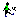

| L : Level (2 / 2) * | SM : Smooth (0 / 0) * | DE : Delay (0 / 0) * † | ||
| G : Game (0) |
| Control (4)
Simulation Control Parameters |
TestModel (9)
(Default) |
|||
| Default (13) | ||||
| View 1 (9) | ||||
| Model Information | Number |
|---|---|
| Total Number of Variables | |
| Total Number of State Variables (Level+Smooth+Delay Variables) | |
| Total Number of Stocks (Stocks in Level+Smooth+Delay Variables) † | |
| Total Number of Macros | |
| Function Sensitivity Parameters | |
| Variables with Source Information | |
| Data Lookup Tables | |
| Time Unit | |
| Initial Time | |
| Final Time | |
| Reported Time Interval | |
| Time Step | |
| Model Is Fully Formulated | |
| Modeler-Defined Groups | |
| VPM File Available | |
| Potential Omissions | Number |
|---|---|
| Unused Variables | |
| Supplementary Variables | |
| Supplementary Variables Being Used | |
| Complex Variable Formulations (Richardson's Rule = 3) | |
| Complex Stock Formulations |
| Types: |
|
|||||||||||||||
| * (state variables / total stocks) | ||||||||||||||||
| † Total stocks do not include fixed delay variables. | ||||||||||||||||
| †† (lookup variables / lookup tables). | ||||||||||||||||
| Groups: |
|
|||||||||||||||
| Modules: |
|
|||||||||||||||
| Views: |
|
|||||||||||||||
| Search: | ••• a-b c-d e-f g-h i-j k-l m-n o-p q-r s-t u-v w-x y-z ••• | |||||||||||||||
| Variable Name and Description | |||
| Default | TestModel (Default) |
L
|
Actual Temperature (Centigrades)
= ∫Change in Temperature dt + [Initial Temp] Present in 1 view: Used by: |
| Default | TestModel (Default) |
C
|
Adjustment Time (Minute)
= 20 Present in 1 view: Used by: |
| Default | TestModel (Default) |
F,A
|
Change in Measured Temperature (Centigrades/Minute)
= (Actual Temperature-Measured Temperature)/Measurement Delay Present in 1 view: Used by: |
| Default | TestModel (Default) |
F,A
|
Change in Temperature (Centigrades/Minute)
= (Desired Temperature-Measured Temperature)/Adjustment Time Present in 1 view: Used by: |
| Default | TestModel (Default) |
C
|
Desired Temperature (Centigrades)
= 20 Present in 1 view: Used by: |
| Default | Control | C
|
FINAL TIME (Minute)
= 150 Description: The final time for the simulation. Not Present In Any View |
| Default | TestModel (Default) |
LI,A
|
Initial Measured (Centigrades)
= Initial Temp Present in 1 view: Used by: |
| Default | TestModel (Default) |
LI,C
|
Initial Temp (Centigrades)
= 10 Present in 1 view: Used by: |
| Default | Control | C
|
INITIAL TIME (Minute)
= 0 Description: The initial time for the simulation. Not Present In Any View Used by:
|
| Default | TestModel (Default) |
L
|
Measured Temperature (Centigrades)
= ∫Change in Measured Temperature dt + [Initial Measured] Present in 1 view: Used by: |
| Default | TestModel (Default) |
C
|
Measurement Delay (Minute)
= 5 Present in 1 view: Used by: |
| Default | Control | C
|
SAVEPER (Minute [0,?])
= 1 Description: The frequency with which output is stored. Not Present In Any View |
| Default | Control | C
|
TIME STEP (Minute [0,?])
= 0.5 Description: The time step for the simulation. Not Present In Any View |
| Undocumented Variable (9) | |||
| Default | TestModel | L | Actual Temperature (Centigrades) |
| Default | TestModel | C | Adjustment Time (Minute) |
| Default | TestModel | F,A | Change in Measured Temperature (Centigrades/Minute) |
| Default | TestModel | F,A | Change in Temperature (Centigrades/Minute) |
| Default | TestModel | C | Desired Temperature (Centigrades) |
| Default | TestModel | LI,A | Initial Measured (Centigrades) |
| Default | TestModel | LI,C | Initial Temp (Centigrades) |
| Default | TestModel | L | Measured Temperature (Centigrades) |
| Default | TestModel | C | Measurement Delay (Minute) |
| Variable | |||
| Default | TestModel | L | Actual Temperature (Centigrades) |
| Default | TestModel | L | Measured Temperature (Centigrades) |
| Total: | 9 | :Total |
| Actual Temperature (in 1 view) | X | Actual Temperature (in 1 view) |
| Adjustment Time (in 1 view) | X | Adjustment Time (in 1 view) |
| Change in Measured Temperature (in 1 view) | X | Change in Measured Temperature (in 1 view) |
| Change in Temperature (in 1 view) | X | Change in Temperature (in 1 view) |
| Desired Temperature (in 1 view) | X | Desired Temperature (in 1 view) |
| FINAL TIME (in 0 views) | FINAL TIME (in 0 views) | |
| Initial Measured (in 1 view) | X | Initial Measured (in 1 view) |
| Initial Temp (in 1 view) | X | Initial Temp (in 1 view) |
| INITIAL TIME (in 0 views) | INITIAL TIME (in 0 views) | |
| Measured Temperature (in 1 view) | X | Measured Temperature (in 1 view) |
| Measurement Delay (in 1 view) | X | Measurement Delay (in 1 view) |
| SAVEPER (in 0 views) | SAVEPER (in 0 views) | |
| TIME STEP (in 0 views) | TIME STEP (in 0 views) | |
| Total: | 9 | :Total |